one of the original maps by John Snow - Deaths are marked by dashes and the location of the water pumps in the area are marked with circles.
| CS 422 |
User Interface Design | developing
effective user interfaces |
Every
spring |
| CS 424 |
Visualization
& Visual Analytics |
interactive 2D
visualization of different types of data |
Every fall |
| CS 426 |
Video Game Programming | creating complete audio visual interactive (and fun) experiences | Every
spring |
| CS 488 |
Computer Graphics I | basics of how computers create images on screens, OpenGL | Every fall |
Visualization
Webster defines Visualization as:
Hamming: "The purpose of computing is insight not
numbers"
What are the advantages? (adapted from [Ware 2000])
How do we make good visualizations? (adapted from [Tufte 1983])
We start off talking about Charles Joseph Minard's 1861
graphic showing Napoleon's losses during his 1812 march to and
from Moscow - possibly the best statistical graph ever drawn ...
why?
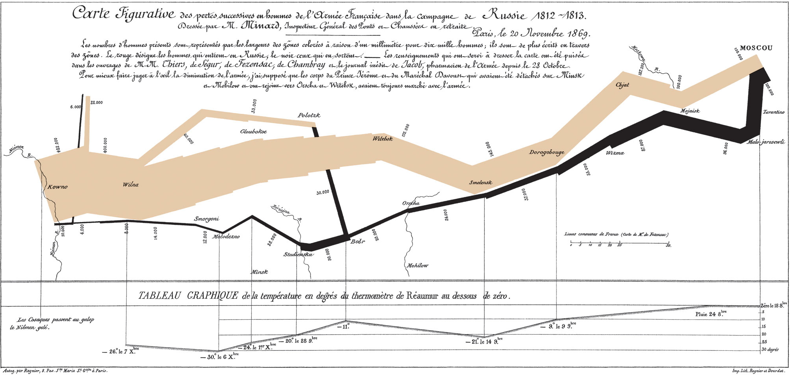
The image is discussed in detail on p41 of The Visual Display of
Quantitative Information
The chart show 6 variables
A really good book to read
if you are interested in this is 'The Ghost Map' by Steven
Johnson, published in 2006. If you prefer, there is a TED talk
here: http://www.ted.com/talks/steven_johnson_tours_the_ghost_map.html
And much more information is
available online at: http://www.ph.ucla.edu/epi/snow.html
one of the
original maps by John Snow - Deaths are
marked by dashes and the location of the water pumps in
the area are marked with circles.
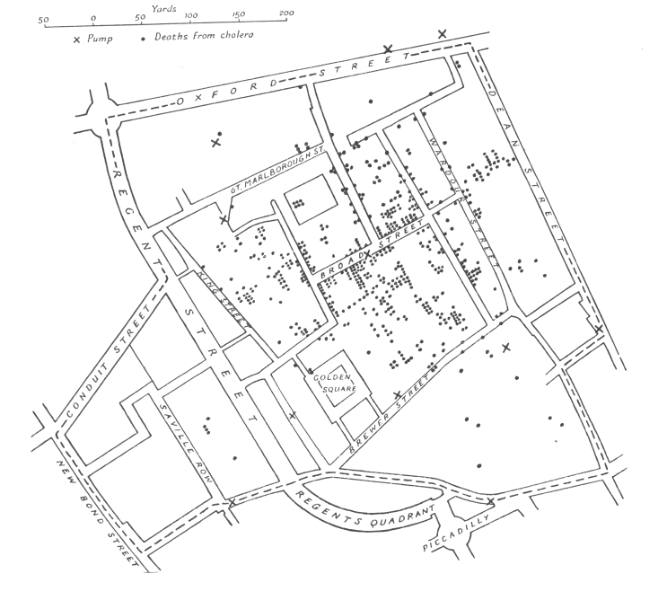
(E.W. Gilbert's simplified version of John Snow's map - more
information on this version can be found at: http://www.ph.ucla.edu/epi/snow/cartographica39(4)1_14_2004.pdf)
Deaths are marked by dots and the
location of the 11 water pumps in the area are marked
with Xs. The deaths seemed centered around the Broad St. pump.
Note that at the time the infectious theory of disease was not
generally accepted. Disease was believed to be caused by morbid
poisons coming from dead bodies and decaying organic matter, and
spread through the air. Snow thought that water was involved in
the transmission of Cholera so he already had an idea what to
look for.
Here is some of his own text:
"Very few of the fifty-six attacks placed in the table to the 31st August occurred till late in the evening of that day. The eruption was extremely sudden, as I learn from the medical men living in the midst of the district, and commenced in the night between the 31st August and 1st September."
"The greatest number of attacks in any one day occurred on the 1st of September, immediately after the outbreak commenced. The following day the attacks fell from one hundred and forty-three to one hundred and sixteen, and the day afterwards to fifty-four. A glance at the above table will show that the fresh attacks continued to become less numerous every day. On September the 8th - the day when the handle of the pump was removed - there were twelve attacks; on the 9th, eleven: on the 10th, five: on the 11th, five; on the 12th, only one: and after this time, there were never more than four attacks on one day. During the decline of the epidemic the deaths were more numerous than the attacks, owing to the decease of many persons who had lingered for several days in consecutive fever.
The last sentence above is important to note. Snow himself can not state that removing the pump handle definitively stopped the outbreak.
Here is some of the actual data from John Snow. Note
that about 4000 people live in the area.
| Date | # of Fatal Attacks | Deaths | Significant Events |
| 8/19 | 1 | 1 |
|
| 8/20 | 1 | 0 |
|
| 8/21 | 1 | 2 |
|
| 8/22 | 0 | 0 |
|
| 8/23 | 1 | 0 |
|
| 8/24 | 1 | 2 | |
| 8/25 | 0 | 0 | |
| 8/26 | 1 | 0 | |
| 8/27 | 1 | 1 | |
| 8/28 | 1 | 0 | |
| 8/29 | 1 | 1 | |
| 8/30 | 8 | 2 | |
| 8/31 | 56 | 3 | |
| 9/01 | 143 | 70 | |
| 9/02 | 116 | 127 | |
| 9/03 | 54 | 76 | |
| 9/04 | 46 | 71 | |
| 9/05 | 36 | 45 | 10%
of neighborhood now dead within 1 week |
| 9/06 | 20 | 37 | |
| 9/07 | 28 | 32 | 75%
of population had left the area |
| 9/08 | 12 | 30 |
pump handle removed |
| 9/09 |
11 |
24 |
|
| 9/10 |
5 |
18 |
|
| 9/11 |
5 |
15 |
|
| 9/12 |
1 |
6 |
|
| 9/13 |
3 |
13 |
|
| 9/14 |
0 |
6 |
|
| 9/15 |
1 |
8 |
|
| 9/16 |
4 |
6 |
|
| 9/17 |
2 |
5 |
|
| 9/18 |
3 |
2 |
|
| 9/19 |
0 |
3 |
|
| 9/20 |
0 |
0 |
|
| 9/21 |
2 |
0 |
|
| 9/22 |
1 |
2 |
|
| 9/23 |
1 |
3 |
|
| 9/24 |
1 |
0 |
|
| 9/25 |
1 |
0 |
|
| 9/26 |
1 |
2 |
|
| 9/27 |
1 |
0 |
|
| 9/28 |
0 |
2 |
|
| 9/29 |
0 |
1 |
John Snow's visualization has a number of good features that you
should strive for:
1. Place data in the appropriate context for
assessing cause and effect
2. Allow the viewer to make quantitative comparisons
3. Encourage search for alternative explanations and
contrary cases
4. Indicate level of certainty and possible errors in the data
#3 is particularly interesting. There are areas near
the Broad Street pump with no/few fatalities and there are a few
fatalities far from the pump. Those suggest that maybe our
hypothesis is wrong.
John Snow visited families of the deceased that
lived far from the pump. Some preferred the taste of the water
at Broad Street as it was usually more clear than the others.
Some had children that went to school near the Broad Street
Pump.
What about the areas near the pump with no
fatalities. One was a brewery employing 70 men. The other was a
work house with over 500 inmates that had only 5 deaths from
cholera, and it had its own water pump.
but its not just about making a graphic, but making a good graphic. A bad graphic may hide the truth.
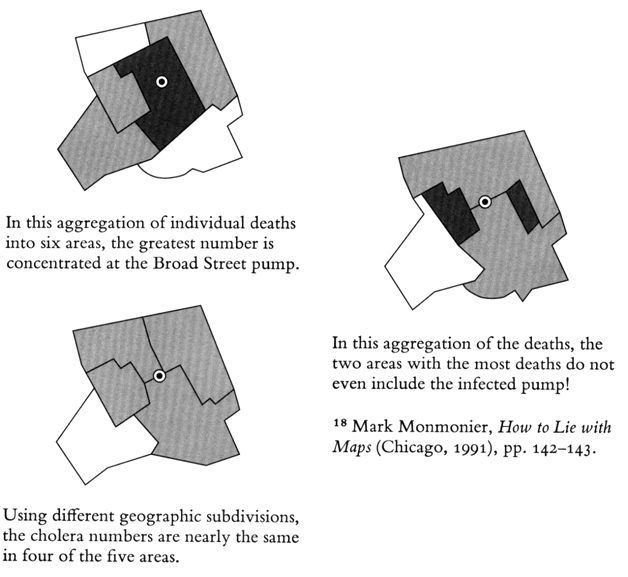
As a result of John Snow's
work this was the last great cholera outbreak in London.
If you want to look at this area now, you can tell Google earth to go to 'Golden Square, London, Greater London, W1F, UK'
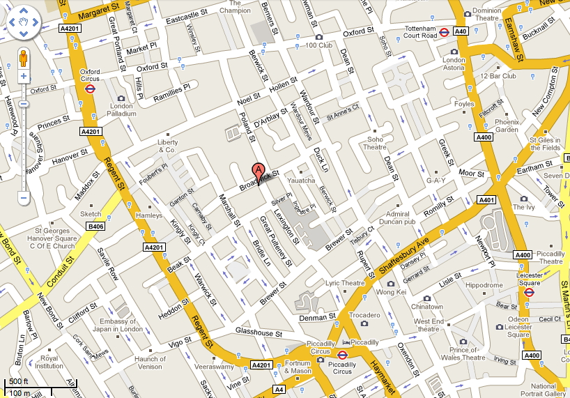
and here is a photo of
me from the summer of 2012 standing at the commemorative pump in
what is now called Broadwick st. The John Snow pub is visible in
the background.
Of local note there is an urban legend that Chicago had 80,000+ fatalities from cholera when in August 1885 a rainstorm dropped 7" of rain on Chicago in one day, overflowing the drainage systems and causing raw sewage to flow into the lake and back into the cities drinking water. The storm happened, the fatalities did not thanks to a shift in the winds.
Now lets look at some common mistakes.
Here is a comparison of a good graphic and a bad graphic, making use of a Choropleth map, dealing with Radon from Things that Make Us Smart, p70-71.
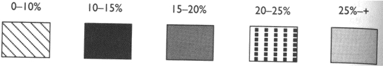
Why is the first version bad:
- density scale is not an ordered additive sequence - the viewer must keep referring back to the legend
Some basic
principles from Norman:
Representations that make use of spatial and perceptual relationships make more effective use of our brains. If these representations use arbitrary symbols then we need to use mental transformations, mental comparisons and other mental processes, forcing us to think reflectively. In experiential cognition we perceive and react efficiently. In reflective cognition we use our decision making skills.
How big is an acre
Here is a familiar image in an unfamiliar orientation.
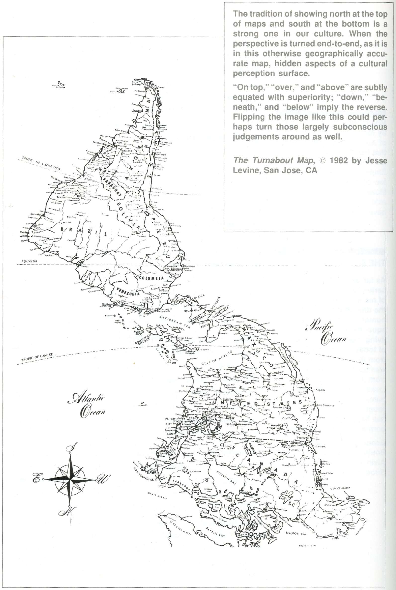
When information is first presented, the user should be
able to quickly orient themselves.
When a map program starts up it should start up with a
view that makes it obvious what the map is showing. Maybe that is
using your current location with your position clearly labelled,
or maybe its a view the country or city that you are accessing the
map program from. The zoom factor should also be appropriate
enough - if you are initially zoomed in too far you may not see
enough landmarks to judge the scale of the map.
Principles of graphical excellence from Tufte (a slightly
longer list now that you've seen some examples):
Here are some examples for class discussion:
and now, for the weather, which is a common analysis
task that we all undertake. We look at temperature data,
precipitation data and make decisions on how to dress and/or how
to get to/from work. We need to know what the weather is before we
go out in the morning, depending on our job what the weather will
be during the day, and what the weather will be like when we try
to get home.
For everyday activities we usually aren't looking for
really specific information (is it going to be 84 degrees F or 83
degrees F, is it going to rain 0.2 inches or 0.3 inches) but
rather ranges of temperature (cold, mild, hot, really hot)
or rainfall (cloudy, light rain, thunderstorms, tornado,
hurricane.) There is also the general unpredictability of the
weather, so we are used to predictions having some variability.
Normally we just care about the weather where we live
and work. If we are traveling we will need to look wider, or if we
are interested in the weather where friends/family are living, or
where some sporting event is talking place.
We normally only care about the weather near the surface
but if you're involved in the airline industry, especially as a
pilot, you care about a much larger volume of weather.
If you job is to predict the weather or study the
climate then you need much more accurate data over larger areas
and longer ranges of time.
How much data is just enough for your purposes and how
easy is it to understand:
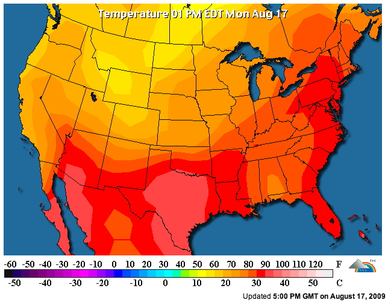
what are the steps you need to go through to figure out
what the temperature in Chicago IL, or Las Vegas, NV.
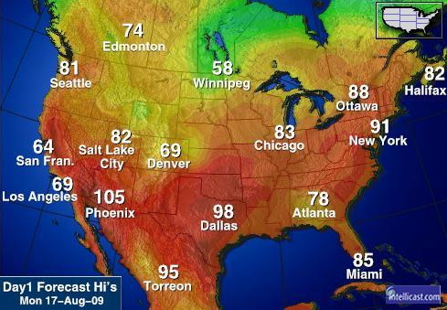
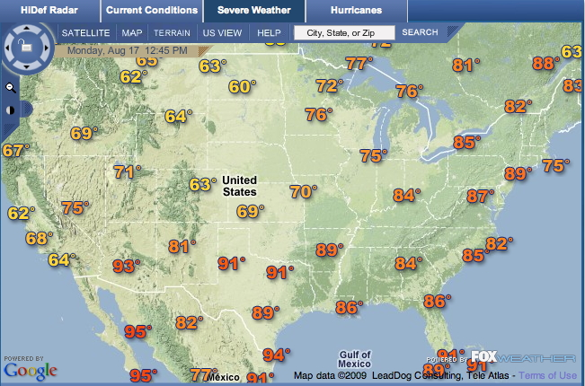
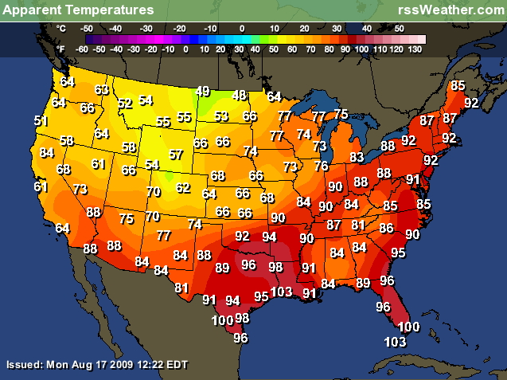
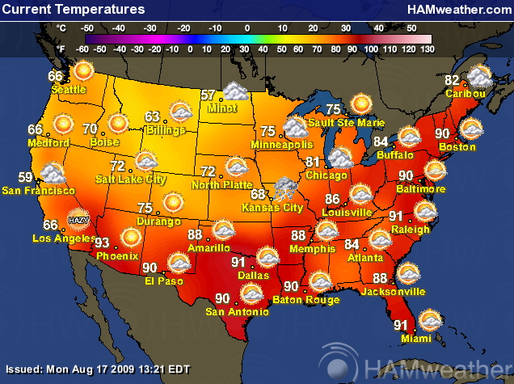
For a slight change here is a precipitation forecast map:
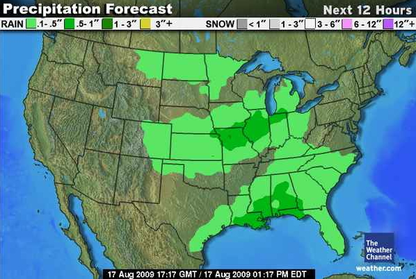
And
again, same question, how would you enhance these visualizations
if they were software-based?
For
simple comparisons to historical values, which makes things
somewhat more analytical, this is a nice site:
http://www.ncdc.noaa.gov/oa/climate/research/cag3/cag3.html
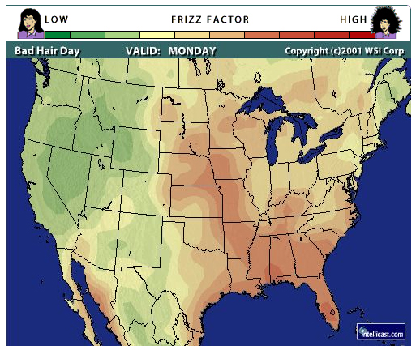
and the corresponding "Frizz Forecast" from Accuweather.
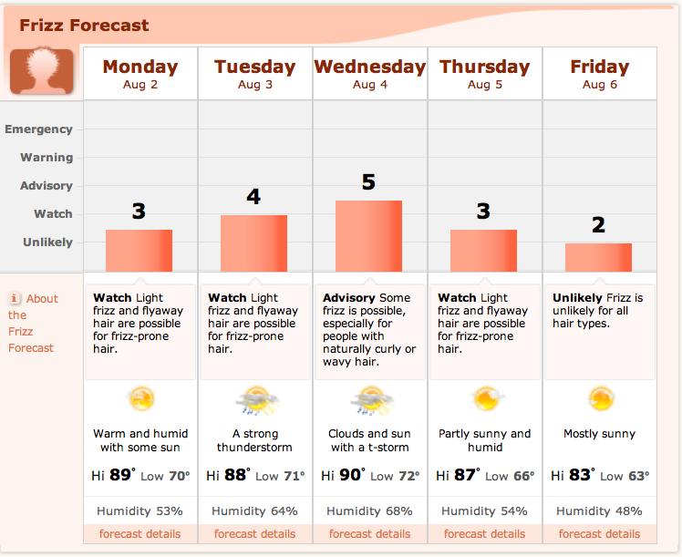

Radar images are nice for knowing where the storms are
right now - moving (animated) radar images are better for knowing
where they have been and predicting where they are heading and
when they will get there.
low rez: http://www.weather.com/maps/maptype/dopplerradarusnational/usdopplerradar_large_animated.html
high rez: http://radar.weather.gov/Conus/full_loop.php
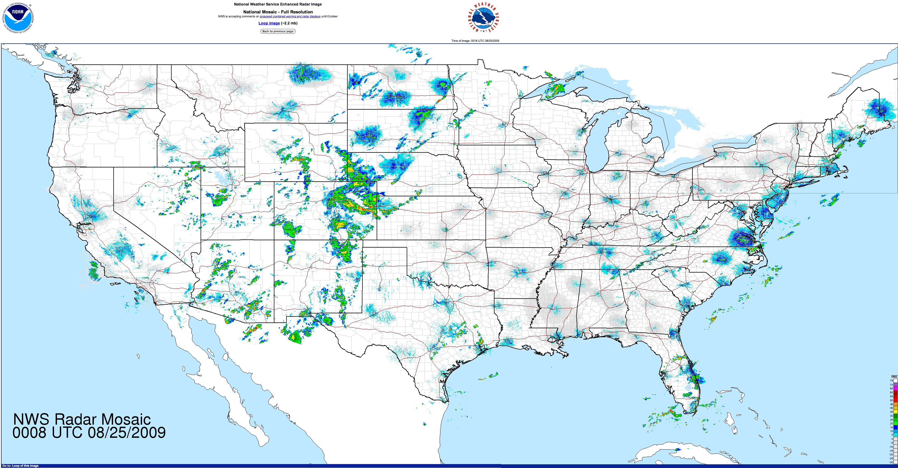


Here is an image from Information Anxiety, P286. Here the problem is over designing the graphic. Trying to make the graphic 'exciting' makes it harder to get information from it.
The projects in the class
are going to be written in Processing, so if you haven't used
processing before you should start by taking a look at http://processing.org/ and
the textbook: Visualizing
Data: Exploring and Explaining Data with the Processing
Environment
http://benfry.com is also a nice
place to for some of the projects used his own language for. In
particular, since we've been looking at maps, http://benfry.com/zipdecode/
The source code there gives you a
pretty simple example showing that the language looks very
familiar if you are used to C, Java, Python, etc. The Visualizing
Data book gives better step by step examples.